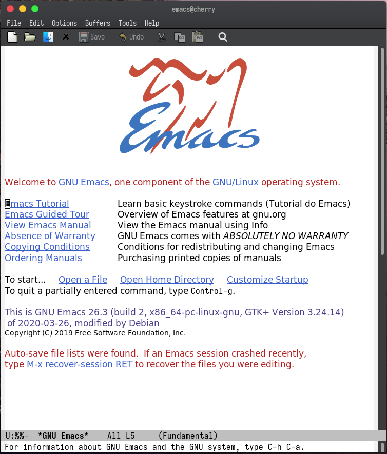

Emacs as a Java IDE
Introduction
Historically java developers was dominated by IDEs and heavy programs(AKA jetbrains stuffs), but now with the lsp-mode for emacs, we have an easy to setup and power engine to produce java code with all others IDEs offers, like autocompletion, go to definition, code actions, refactor options and something that IDEs don't have, A powerful keyboard center experience and high extensibility
Setting Emacs for basic usage
I'll assume you don't know anything about emacs and want to know about this wonderful elisp interpreter.
Installing
First, to install emacs is simple enough to install with your package manager
For Ubuntu/Debian based distros:
sudo apt-get install emacs
For Arch based distros:
sudo pacman -S emacs
For OSX:
brew cask install emacs
If you use other system, see in this link: https://www.gnu.org/software/emacs/download.html
Basic settings
Emacs default is quite ugly, like trust me it's ugly 
So let's make this look nicer and also learn some cool things about emacs.
First open emacs and type C-x C-f where C is shortcut for Control(Ctrl), this
brings you a minibuffer on the bottom where you can find files, type ~/.emacs.d/init.el
and hit Enter this is your main config file.
Now let's prettify a little bit this editor, write this in the file:
(scroll-bar-mode -1)
(tool-bar-mode -1)
(menu-bar-mode -1)
(setq ring-bell-function 'ignore)
(setq locale-coding-system 'utf-8)
(set-terminal-coding-system 'utf-8)
(set-keyboard-coding-system 'utf-8)
(set-selection-coding-system 'utf-8)
(prefer-coding-system 'utf-8)
To make this apply, press M-x where M stands for the Alt Key, type eval-buffer and press Enter